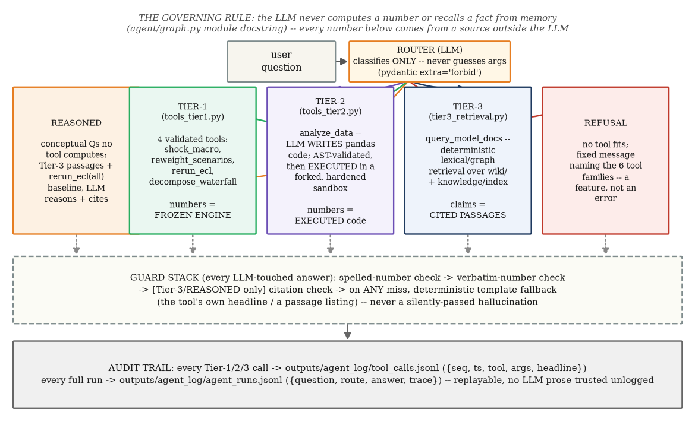
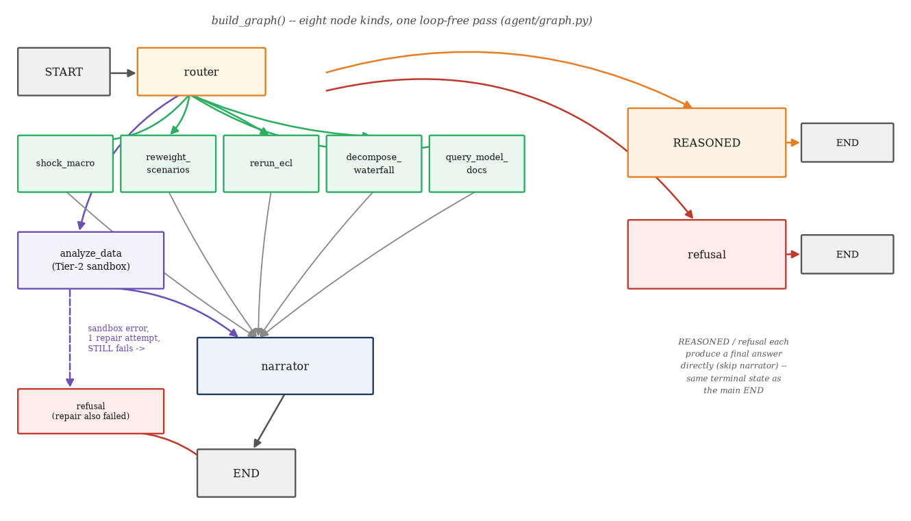

analyze_dataquery_model_docsChapters 1–7 built a frozen, deterministic IFRS 9 ECL engine and validated it exhaustively.
This chapter is about the layer sitting on top of that engine that lets a bank risk analyst ask it questions
in plain English — and the entire design problem it solves is trust: a large language model is fluent, but
it is also a confident maker-upper of plausible-sounding numbers. The project's answer, built across four
phases (Day 4's LangGraph router and four Tier-1 tools; a stretch phase adding Tier-3 documentation
retrieval and an MCP server; App v2 adding the Tier-2 sandboxed code interpreter; and a final REASONED
route for conceptual questions) is a three-tier grounded-agent architecture in which the LLM
is never trusted with a number or a fact on its own — every tier enforces that constraint by a different
mechanical means, and a shared guard stack catches the LLM's narration prose before it ever reaches a user.
Source anchors: agent/graph.py (module docstring is the architecture's own best summary),
wiki/pages/agent-layer.md (topic-map ids D1–D2). This is a systems chapter, not a
mathematical one — no derivations, and every number below is either quoted verbatim from a real recorded
exchange under outputs/, or reproduced live this session against the actual local engine.
agent/graph.py module docstring).
"THE GOVERNING RULE (non-negotiable): the LLM never does arithmetic and never
states a fact from its own memory. Every NUMBER in every Tier-1 answer comes from the frozen engine via the
four Tier-1 tools in agent/tools_tier1.py. Every CLAIM in a Tier-3
(query_model_docs) answer comes from a retrieved wiki/knowledge-corpus passage, cited. Every
NUMBER in a Tier-2 (analyze_data) answer comes from EXECUTING LLM-written pandas code in the
sandbox — the LLM may write the CODE, never the number."
Three tiers, three different mechanical enforcements of the same rule: Tier-1 numbers are looked up from a pydantic-validated call into the frozen engine; Tier-2 numbers are computed by code that was executed, not merely written; Tier-3 claims are quoted passages with a verified citation. A fourth outcome, REASONED (§8.5), extends the same discipline to conceptual questions with no exact tool answer, and a fifth, refusal (§8.7), is what happens when none of the above legitimately applies.

agent/graph.py, agent/tools_tier1.py,
agent/tools_tier2.py, agent/tier3_retrieval.py).PRIMARY_MODEL = "google/gemma-4-31b-it" with automatic fallback to
FALLBACK_MODEL = "deepseek/deepseek-v4-flash" on any API error (agent/graph.py),
called with a different SYSTEM PROMPT at each graph node. The "three tiers" describe three different
trust architectures around the LLM's output, not three specialised models — the same general-purpose
chat model that routes your question is the one that later narrates the tool result, with its role
constrained entirely by which system prompt it was handed and which mechanical guard checks its output
afterward.
Tier-1 (agent/tools_tier1.py) is four pure, deterministic Python functions the router may
call: shock_macro, reweight_scenarios, rerun_ecl,
decompose_waterfall. Each has a pydantic argument model with extra="forbid" —
malformed or extraneous arguments raise ValidationError BEFORE any engine code runs, and the
router never gets a second chance to guess: a validation failure collapses straight to refusal
(decide_route, §8.5). Every one of the six heavy artifacts these tools need (fitted hazard
and LGD models, recovered systematic factor Z, the fitted satellite, the DFAST scenario set,
the four per-loan scenario ECL books) is built ONCE, lazily, on first use — the frozen-engine discipline
means these tools compose Chapters 2–6's engine (engine/{hazard,lgd,ead,staging,
ecl,vasicek,scenarios,satellite}.py), never re-derive it.
agent/tools_tier1.py).
class ShockMacroArgs(BaseModel):
model_config = ConfigDict(extra="forbid")
var: Literal["UER", "HPI", "GDP"]
shock: float = Field(allow_inf_nan=False)
shape: Literal["parallel", "peak_revert"] = "parallel"
@model_validator(mode="after")
def _within_bounds(self) -> "ShockMacroArgs":
bound = SHOCK_BOUNDS[self.var] # UER 10pp, HPI/GDP 5pp/q
if abs(self.shock) > bound:
raise ValueError(...) # -> ValidationError -> refusal
return self
The same shape recurs for all four tools: a Literal enum wherever
the argument space is closed (segment names, macro variables, shock shapes), a bounded Field
wherever it is numeric, and a @model_validator for cross-field checks that can't be expressed
per-field alone — weights summing to 1 (ReweightArgs), t0 < t1
(DecomposeWaterfallArgs). Nothing downstream ever sees an argument the pydantic model did not
already accept.
shock_macro(var, shock, shape) perturbs the base scenario's macro path and reruns the
satellite→Z→PIT→ECL chain (Chapters 5–6) for the t=60 book. The interesting design
decision is what happens to a UNIVARIATE shock: the project's fitted satellite is
$Z=f(\text{hpi\_growth\_lag1},\ \text{gdp\_growth\_lag2})$ — the unemployment driver was EXCLUDED by the
economic-sign governance constraint on this one-cycle panel (Chapter 6, outputs/satellite/
satellite_report.md). A UER-only path move would therefore be entirely invisible to the credit-cycle
factor $Z$ — not because unemployment doesn't matter economically, but because of a small-sample
identification artifact in THIS fitted satellite. shock_macro closes that gap by applying every
shock as a CO-MOVING multivariate move along the DFAST severe-minus-base direction:
for each concept $c\in\{\text{uer},\ \text{hpi\_growth},\ \text{gdp\_growth}\}$, where $v$ is the named
shock variable ($\beta_v=1$ by construction). A named shock of size shock pp therefore drags
the OTHER two concepts along by their empirically co-moving amount, not by zero — the applied per-concept
deltas are returned in full for transparency, never hidden inside an opaque re-run.
shock_macro("UER", 2.0, "parallel"). Full router→tool→
narrator trace, quoted verbatim from outputs/demo/e2e_trace.json (question: "What happens to the
allowance if unemployment rises 2 percentage points?", per the router's own few-shot example, §8.5):
route: "shock_macro"
router args: {"var": "UER", "shock": 2.0, "shape": "parallel"}
tool headline (tc-000001): "UER +2pp (parallel) coherent shock of the base scenario:
reported allowance \$30.5m -> \$31.7m (delta +1.2m, +4.1%), shocked coverage 1.89%"
narrator answer: "UER +2pp (parallel) coherent shock of the base scenario: reported
allowance \$30.5m -> \$31.7m (delta +1.2m, +4.1%), shocked coverage 1.89%. The increase
is driven by remeasurement of 1239931.6012929585. Stage 1 accounts for
79.31532452794009 of the total allowance."
number_check_passed: true
Reproduced LIVE this session (uv run --no-sync python -c "from
agent.tools_tier1 import shock_macro; shock_macro('UER', 2.0, 'parallel')") — byte-identical headline,
full precision below (a fresh audit-trail entry, tc-000048, was appended by this live call, the
same mechanism §8.8 describes):
| field | value |
|---|---|
| baseline_allowance | \$30,454,080.65 |
| shocked_allowance | \$31,694,012.25 |
| delta / delta_pct | +\$1,239,931.60 / +4.0715% |
| coverage (baseline → shocked) | 1.8195% → 1.8936% |
| applied_peak_deltas_pp.uer | +2.0 (the named variable, β=1 exactly) |
| applied_peak_deltas_pp.hpi_growth | −0.8258713 pp/q |
| applied_peak_deltas_pp.gdp_growth | −0.1090326 pp/q |
tests/test_tools.py::test_shock_uer_up_increases_allowance asserts this sign live). This is
the coherent-shock convention as the agent actually applies it: a one-line "UER +2pp" request never reaches
the satellite as a univariate nudge — it reaches it as a small, internally consistent three-variable
recession, which is why it moves the allowance at all despite the satellite having no direct UER term.
reweight_scenarios(w_up, w_base, w_down) recomputes the weighted allowance from the three
CACHED per-scenario ECL totals (no re-run) and reports the Jensen ratio — weighted allowance divided by the
allowance AT the weighted-average macro path (Chapter 6's Jensen's-inequality gap, made interactively
queryable).
reweight_scenarios(0.3, 0.4, 0.3). Audit-log entry, quoted verbatim
from outputs/agent_log/tool_calls.jsonl (seq 2): {"tool": "reweight_scenarios",
"args": {"w_up": 0.3, "w_base": 0.4, "w_down": 0.3}, "headline": "weights up/base/down = 0.30/0.40/0.30:
weighted allowance \$34.8m (+2.1% vs adopted 25/50/25 \$34.0m); Jensen ratio 1.041x vs \$33.4m at the averaged
path"}. Reproduced live this session, full precision:
| per-scenario allowance | up | base | down |
|---|---|---|---|
| USD | \$27.69m | \$30.45m | \$47.59m |
weighted_allowance = \$34,764,837.25; allowance_at_average_path = \$33,411,300.28;
jensen_ratio = 1.0405113528588055; adopted_weighted_allowance (25/50/25) =
\$34,046,377.82; delta_vs_adopted_pct = +2.110237507390167.
rerun_ecl(segment) filters the cached per-loan scenario books by segment (all,
stage1, stage2, stage3, investor,
high_ltv — current updated LTV > 80) and reports the scenario-weighted allowance,
stage mix, and share of the total book allowance — pure decomposition of already-computed numbers, no
re-run.
rerun_ecl("high_ltv"). Audit-log entry, outputs/agent_log/
tool_calls.jsonl (seq 3): headline "segment 'high_ltv' (current updated LTV > 80): 3,201
loans, balance \$756.7m, scenario-weighted allowance \$18.9m (55.6% of the book allowance), coverage
2.50%". Reproduced live this session, full precision:
| stage | n_loans | allowance | % of segment allowance |
|---|---|---|---|
| Stage 1 | 3,176 | \$14,738,040.49 | 77.80% |
| Stage 2 | 3 | \$486,590.04 | 2.57% |
| Stage 3 | 22 | \$3,717,983.07 | 19.63% |
segment_definition = "current updated LTV > 80"; weighted_allowance =
\$18,942,613.59; share_of_book_allowance_pct = 55.6377%.
decompose_waterfall(t0, t1) runs the FROZEN engine's movement_decomposition
(Chapter 2) between two rung-1 snapshots: opening + stage_migration + remeasurement + derecognitions +
new_loans = closing, an identity asserted inside the frozen engine itself.
decompose_waterfall(20, 40). Audit-log entry, outputs/
agent_log/tool_calls.jsonl (seq 4): headline "allowance waterfall t=20 (2005Q1) -> t=40
(2010Q1): opening \$24.5m, stage migration +3.9m, remeasurement +26.0m, derecognitions -21.2m, new loans
+999.4m, closing \$1,032.6m". Reproduced live this session, full precision:
| component | amount (USD) | n_loans | kind |
|---|---|---|---|
| opening | 24,538,544.76 | 8,662 | level |
| stage_migration | +3,879,319.76 | 498 | delta |
| remeasurement | +26,010,644.52 | 1,948 | delta |
| derecognitions | −21,177,011.65 | 6,714 | delta |
| new_loans | +999,361,873.81 | 11,915 | delta |
| closing | 1,032,613,371.19 | 13,863 | level |
identity_gap = 0.0 — opening + the four deltas equals closing exactly, to full float precision.
new_loans component dwarfs every other term here (\$999.4m) because
t=20→t=40 (2005Q1→2010Q1) spans most of this synthetic panel's origination window, not because
of anything unusual about credit quality — a reminder that decompose_waterfall's components are
period-specific attributions, not universal shares, and a reader asking the agent for "the waterfall" without
specifying dates gets the tool's own defaults (t0=20, t1=40), matching the published Chapter 2 exhibit
exactly.
shock_macro delta is ALWAYS 100% remeasurement, by design, not by accident.
Staging is frozen at the t=60 reporting date and is scenario-invariant (Chapters 1–2) — a macro
shock changes the ECL AMOUNT for a loan without ever changing which STAGE it sits in. Feeding a shocked book
back through movement_decomposition against the unshocked base book therefore always shows
zero stage migration, zero derecognitions, zero new loans — the entire delta lands in
remeasurement, "which is exactly the point" (tools_tier1.py docstring,
test_shock_waterfall_books_delta_as_remeasurement). Expecting a macro shock to move loans
between stages is a category error: that is what the SICR/staging engine does at a NEW reporting date, not
what a same-date macro re-run does.
shock_macro call move the allowance at all, given the satellite has no
direct UER coefficient?
shock_macro never applies a univariate move — the co-movement
betas (§8.2's boxed formula) drag hpi_growth and gdp_growth (the satellite's
actual drivers) along by their empirically fitted co-moving amount over the DFAST severe-minus-base window,
so the requested UER shock reaches the satellite indirectly through the two variables it actually
responds to.rerun_ecl("high_ltv") reports 3,201 loans carrying 55.6% of the book's allowance. Is that a
statement about the book's CURRENT risk, or a forward-looking prediction?
shock_macro's kind of what-if statement.decompose_waterfall for the waterfall between t=61 and t=90. What happens, and
why?
DecomposeWaterfallArgs bounds both t0 and t1
to 1..T_SNAP (T_SNAP=60, the panel's last reporting quarter) via a pydantic
Field(..., le=T_SNAP) — t1=90 fails validation BEFORE any engine code runs,
which decide_route (§8.5) turns into a refusal, never a guessed or extrapolated
waterfall beyond the panel's actual history.analyze_dataTier-1's four tools cover the questions someone anticipated in advance. Real analysts ask long-tail
questions no fixed parameter set covers — "which FICO band drives the most allowance", "top 10 loans by
exposure", "average LTV of Stage 2 loans". Tier-2's analyze_data (agent/
tools_tier2.py) answers these by letting the LLM WRITE pandas code against three read-only
DataFrames (book, scenarios, z_path — built once from the already-run
Tier-1 engine state, documented in full in the module's own docstring) — but the number shown to the user
always comes from EXECUTING that code, never from the LLM's own claim about what it would compute.
outputs/demo/live_b_tier2.json:
route: "analyze_data" generated code: result = book[book['stage'] == 2]['updated_ltv'].mean() narrator answer: "The average updated LTV of stage 2 loans is 272.9774621332569." number_check_passed: trueReproduced LIVE this session directly against
run_sandboxed — identical to the full float:
{"ok": true, "result_preview": 272.9774621332569, "result_shape": null, "error": null}.
updated_ltv column contains for this tiny 3-loan Stage 2
segment (recall §8.2's rerun_ecl("high_ltv") found only 3 Stage 2 loans among the
high-LTV segment too): a small-sample severely-underwater LTV outlier, not a bug. This is precisely the value
of executing rather than trusting an LLM's arithmetic — a narrator asked to state "the average LTV" from
memory would very plausibly have rounded or sanity-checked this figure down to something more typical; the
guard stack (§8.6) forces it to be quoted exactly as computed, outlier and all.
![Tier-2 sandbox hardening pipeline: LLM code-writer writes pandas code, an AST walk validates it before execution banning dunders/exec/eval/open/read-and-to-methods/forbidden attributes at every depth, a forked child process executes with copy-on-write isolation, child hardening caps address space and scrubs environment variables and installs an audit hook, then a timeout and result-size cap; right panel documents the RCE catch — pd.io.common.os.system chaining through four attribute hops past a filter that once checked only the outermost name, fixed by walking every attribute node in the chain, live-confirmed rejected today](../assets/img/ch08/02_sandbox_hardening_pipeline.png)
agent/tools_tier2.py; wiki/memory/log.md; tests/test_tier2.py)._validate_ast, walked BEFORE any code executes).
import pandas / import numpy (either alias) or
from pandas import ... / from numpy import ... — anything else (os,
sys, a pandas/numpy submodule import) is rejected.__class__, __mro__, __globals__, ...) is
rejected outright — this alone stops ().__class__.__mro__-style sandbox escapes.exec, eval, compile, open,
input, globals, locals, vars, getattr,
setattr, delattr, __import__ are rejected wherever they appear — and
are ALSO simply absent from the restricted __builtins__ handed to the child's exec,
so even an AST pattern this walk fails to anticipate still hits a plain NameError at runtime,
never the real builtin.read_ (file I/O) or to_ EXCEPT the five in-memory
conversions to_dict/to_list/to_numpy/to_frame/
to_series is rejected.FORBIDDEN_ATTRS — a denylist of module handles and OS primitives (os,
sys, subprocess, system, popen, environ,
get_handle, ...) — is checked against EVERY ast.Attribute node the walk visits, at
ANY depth of a chain, not only a name's direct attribute..eval()/.query() ARE allowed (common pandas idioms) but only with a
STRING-LITERAL expression argument (so its contents can actually be inspected) containing neither
@ (outer-scope variable access) nor __, and only at their default engine/parser.wiki/memory/log.md, App v2 + Tier-2
gate entry). The concrete escape was pd.io.common.os.system('id'): this chains through FOUR
attribute hops (.io → .common → .os →
.system) starting from the already-whitelisted name pd. An attribute check that
only inspects a name's OUTERMOST/direct attribute would see nothing wrong with pd.io and never
re-examine the .os/.system hops buried further down the same expression — a
textbook module-traversal escape past a filter that is technically "checking attributes" but not checking
EVERY attribute in a chain. The fix, still in the code today, is exactly what §8.3's boxed AST rules
above describe: _validate_ast walks EVERY ast.Attribute node the parser produces
(for node in ast.walk(tree): ... elif isinstance(node, ast.Attribute): attr = node.attr; if attr in
FORBIDDEN_ATTRS or attr.startswith(FORBIDDEN_ATTR_PREFIXES): raise SandboxViolation(...)), so
FORBIDDEN_ATTRS's entries ("os", "system", "environ",
"popen", "get_handle", ...) match at ANY depth, not just as pd's or
np's direct attribute. tests/test_tier2.py now carries this exact attack and six
siblings — os.environ dict dump, os.environ.get, os.open,
os.popen, a numpy-submodule variant (np.lib.npyio.os.environ), and
get_handle — under one comment reading "NEW (adversarial review): module-traversal RCE /
exfiltration", one test per variant, all inside the same ESCAPE_ATTEMPTS list a few lines
below a SEPARATE trio of str.format/format_map attribute-traversal exfiltration
attempts (own comment, same underlying attribute-walk defence). Reproduced LIVE this session against the
actual sandbox:
>>> run_sandboxed("result = pd.io.common.os.system('id')")
{"ok": false, "result_preview": null, "result_shape": null,
"error": "attribute access '.system' is not allowed in sandboxed code
(frame/module/OS-escape surface)"}
_harden_child, run BEFORE user code — an address-space cap, an
os.environ.clear() that removes every secret the child could otherwise leak, and a Python audit
hook that blocks file writes, network calls, and process-spawning primitives PATH-INDEPENDENTLY, i.e. no
matter which attribute chain reached them), and layer 4 (a hard 5-second wall-clock timeout plus
50-row/5000-character result caps). The module docstring is explicit that this is deliberate belt-and-braces
design, not redundancy for its own sake: the AST filter gives a clean pre-execution error and a repair
signal the code-writer LLM can act on; the runtime hardening is the PATH-INDEPENDENT backstop for whatever
the denylist fails to anticipate next time.
MAX_ROWS, MAX_CHARS)
— but the summarised preview always ALSO reports n_rows_total alongside
n_rows_shown, so a narrator (and a reader) can always tell a result was cut down, and by how
much. A stray unbounded query (e.g. returning every row of the t=60 book) fails safely into a visibly
truncated preview, never a silently misleading "here is the whole answer" when it isn't.
FORBIDDEN_ATTRS against every ast.Attribute node,
rather than just the first attribute after a name like pd or np?
pd.io.common.os.system) —
each hop in that chain is its own ast.Attribute node in the parsed tree, so only walking
EVERY node (not just ones directly off a known name) catches .os/.system
wherever they appear in the expression.OPENROUTER_API_KEY out of the process environment?
_harden_child calls os.environ.clear() in the forked child
BEFORE any user code runs — the secret is simply gone from that process's environment by the time the
sandboxed code executes, regardless of which attribute chain an attack used to try to reach it. This is
the path-independent layer the interpretation box above describes: it does not matter HOW the code tries
to reach the environment, because the environment is empty.n_rows_total: 500 alongside
n_rows_shown: 50 — so the truncation is visible in the structured result, never a silent
"these are all the rows" misrepresentation.query_model_docsTier-1 and Tier-2 answer questions with a NUMBER. Tier-3 (agent/tier3_retrieval.py) answers
questions about what the project's OWN documentation says — methodology, definitions, design rationale —
strictly by retrieving and quoting real passages, with NO LLM involved in the retrieval step itself. Two
sources, reused from two existing skills rather than reimplemented: the model-development wiki's typed graph
(.claude/skills/llm-wiki/scripts/wiki_query.py — lexical seed scoring + a 1-hop graph
expansion) and the indexed IFRS 9 knowledge corpus (.claude/skills/pageindex-plus/scripts/
pageindex_query.py — offline keyword scoring over the PageIndex tree). Both retrieval passes are pure
functions of (question, on-disk wiki, on-disk index) — same question, same files, identical passages every
time; only the audit sequence number varies.
"<page path>#<heading>" where the heading is drawn VERBATIM from that exact page's
own parsed heading list — the module never authors a heading string itself, only echoes one it already found.
A notes passage's citation is "notes §<section> p<start>[-<end>]", with
the section number and page range read straight off the loaded PageIndex tree. Before ever citing a heading,
the code asserts it is present in that page's own parsed heading list — defensive, since it is true by
construction, but asserted anyway so the invariant can never silently break.
outputs/demo/live_c_tier3.json:
route: "query_model_docs" tool headline: "6 documentation passage(s) found for 'Explain the ECL movement waterfall.': pages/ecl-engine.md#Headline numbers; pages/scenario-layer.md#Satellite + scenario ECL; index.md#Modules; notes §9.4 p11; notes §9.2 p10; notes §12.3 p17" narrator answer: "The ECL movement waterfall decomposes the change in allowance between two periods. For the movement from t=20 to t=40, the waterfall consists of the following components: * Opening balance: \$24.5m [pages/ecl-engine.md#Headline numbers]. * Stage migration: +\$3.9m [pages/ecl-engine.md#Headline numbers]. * Remeasurement: +\$26.0m [pages/ecl-engine.md#Headline numbers]. * Derecognitions: -\$21.2m [pages/ecl-engine.md#Headline numbers]. * New loans: +\$999.4m [pages/ecl-engine.md#Headline numbers]. * Closing balance: \$1,032.6m [pages/ecl-engine.md#Headline numbers]. The identity residual for this movement is less than \$0.01 [pages/ecl-engine.md#Headline numbers]." citation_check_passed: true
decompose_waterfall(20, 40)
exchange almost exactly (the wiki page's own printed figures, not a fresh engine run — Tier-3 quotes
documentation, it does not call Tier-1) — a nice cross-check that the wiki's own numbers and the live engine
agree. Note the citation discipline: EVERY bullet repeats the same citation
[pages/ecl-engine.md#Headline numbers] because every number in this particular answer happens to
come from that one section; a question drawing on multiple passages would show different citations attached
to different claims.
decompose_waterfall
(tool 4), never this route. Use this route only for what the documentation SAYS." This distinction
was not free — the project's own build log records a review catch during the stretch phase:
"knowledge route was swallowing decompose_waterfall question 9 - fixed"
(wiki/memory/log.md) — an early router misrouted a "walk me through" question that should have
triggered a fresh Tier-1 engine call into Tier-3's documentation quote instead. The fix is the disambiguation
rule now baked directly into ROUTER_SYSTEM_PROMPT.
query_model_docs get away with NO LLM call anywhere in its retrieval step, while
Tier-1's narrator still needs one?
docs_answer_ok, §8.6) and replaced by a deterministic passage
listing if it fails.pages/ecl-engine.md#Headline numbers. Could the narrator LLM have invented
that heading string itself?
_wiki_passages only ever selects a heading it already found in that
exact page's own parsed heading list (n["headings"]), and defensively re-asserts the heading
is present in that list before ever building the citation string. The narrator LLM is handed the citation
as part of the passage JSON and is REQUIRED to reproduce it verbatim (§8.6's citation check) — it
cannot author a new one that would pass the guard.Every question enters the graph at exactly one place: the router node. A single LLM call, temperature 0,
classifies the question into exactly one of three CLASSES — COMPUTABLE (one of the six Tier-1/Tier-2/Tier-3
tools), REASONED (a conceptual question no tool computes or simply quotes, but that a grounded, cited
reasoning pass can responsibly address), or REFUSE (everything else) — and, for COMPUTABLE, also emits that
tool's arguments. decide_route (agent/graph.py) then pydantic-validates whatever
the router claimed: an unparseable response, an unknown route, or an argument-validation failure ALL collapse
straight to REFUSE — the agent never guesses an argument to paper over a malformed router response.

build_graph(): one router, eight node kinds, one
loop-free pass from START to END (agent/graph.py).{"route": "<tool name, REASONED, or REFUSE>", "args": {...}}.
_extract_json tolerates a code-fenced or prose-trailing response (a common LLM formatting
habit) but still requires a well-formed JSON object underneath. ROUTE_ARG_MODELS maps every
legal route to its pydantic model — REASONED and Tier-2/Tier-3's own argument models are deliberately EMPTY
(extra="forbid", no fields) by design: for these three routes the downstream node always reuses
the user's OWN ORIGINAL question text, never a router-authored paraphrase, so the router's only job for them
is classification, never argument extraction.
The router's own system prompt spells out the disambiguation logic in detail — worth reading close to
verbatim, since it is the actual few-shot logic driving every routing decision (condensed from
ROUTER_SYSTEM_PROMPT, agent/graph.py):
"(a) COMPUTABLE — one of six engine tools that returns a fresh number; (b) REASONED — a conceptually relevant question about credit risk, IFRS 9, or this model's own methodology that NO tool computes or the documentation retriever simply quotes verbatim, but that a grounded, cited, number-disciplined reasoning pass can responsibly address; (c) REFUSE — everything else (no connection to this model or credit risk, or a request for a fresh number/fact with no tool for it)."
"REFUSE anything else: general knowledge unrelated to credit risk or this project, market or rate predictions, opinions/advice unconnected to this model, arithmetic requests, poems or other creative writing, other portfolios, anything needing data or computation outside these seven routes. When in doubt between REASONED and REFUSE for a question that IS at least about credit risk / IFRS 9 / this model, prefer REASONED — never invent a number, but do not refuse a legitimate conceptual question either. When a question has no connection at all to this model or credit risk, REFUSE."
The prompt closes with three worked few-shot examples per class — quoted exactly, since these are the literal anchors the router generalises from:
| class | example question | routed to |
|---|---|---|
| COMPUTABLE | "What happens to the allowance if unemployment rises 2 percentage points?" | shock_macro |
| COMPUTABLE | "How much of the allowance sits in Stage 2?" | rerun_ecl |
| COMPUTABLE | "What are the top 5 loans by weighted allowance?" | analyze_data |
| REASONED | "Does the satellite need a UER x HPI interaction, or do the main effects and momentum already account for the joint stress response?" | REASONED |
| REASONED | "Why does the double-trigger LTV x UER coefficient come out negative?" | REASONED |
| REASONED | "If unemployment and house prices both deteriorate at once, would you expect the combined hit to default risk to be additive, or worse than additive?" | REASONED |
| REFUSE | "What's your view on Bitcoin as a hedge for our book?" | REFUSE |
| REFUSE | "What will the Fed do with rates next year?" | REFUSE |
| REFUSE | "Please compute 123 * 456 for me." | REFUSE |
decompose_waterfall (Tier-1) — the router's explicit disambiguation
rule routes any request to SEE/show/walk through the book's actual movement NUMBERS to this tool, reserving
query_model_docs for what the documentation SAYS (definitions, stated methodology) rather than
a numeric walkthrough. §8.4's gotcha records the real review catch that made this rule necessary.query_model_docs, analyze_data, and
REASONED all deliberately EMPTY (extra="forbid", no fields)?
decide_route catches the ValueError from
_extract_json and returns {"route": REFUSE, ...} with a diagnostic detail string
— the agent NEVER falls back to guessing a route or arguments from a malformed response; any parse or
validation failure collapses straight to the same fixed refusal path as a genuinely out-of-scope
question.Every LLM-authored piece of prose in this system — Tier-1's narration, Tier-3's docs narration, REASONED's interpretation — is DISTRUSTED mechanically before it is ever shown. The guard stack was not designed in one pass; it was built up in the order the project actually needed each layer, and understanding that construction order is the clearest way to understand what each layer catches that the others don't.
_number_tokens(text) finds
every digit-token substring (-?\d[\d,]*(?:\.\d+)?) in the LLM's narration.
_allowed_numbers(tool_result) walks the ENTIRE tool-result JSON and, for every numeric leaf,
allows the raw value AND its two legitimate DISPLAY transforms — dollars→millions (÷1e6) and a
fraction→percent (×100) — plus every digit token appearing anywhere in the JSON's own text
(headline strings, period labels, the tool_call_id). narration_numbers_ok then
requires EVERY number token in the narration to equal, or be a plain rounding at ITS OWN printed precision
of, an allowed number — sign-insensitive, so "fell by \$2.8m" legally matches a delta of −2.8. One miss
fails the whole text.
_spelled_number_violation() wired into ALL THREE guards
(reasoned/narration/docs)" (wiki/pages/agent-layer.md). The fix,
_spelled_number_violation(text), fires on two independently sufficient triggers: (1) any
MAGNITUDE noun — hundred/thousand/million/billion/trillion/dozen/score, singular or plural — appearing at
all (these words are essentially never used non-numerically in this financial domain, so "tens of millions"
is caught even with no digit and no leading number word), or (2) a small cardinal word (zero..ninety) within
4 tokens of a unit word (percent/pp/bps/dollars/cents/basis) — catching "forty-seven percent" while NOT
flagging ordinary prose ("the model has one satellite equation and two macro drivers").
Note on execution order: in the code today narration_numbers_ok (and its Tier-3/REASONED
siblings) actually run this spelled-number check FIRST as a cheap short-circuit, then the verbatim-number
loop — the two layers are listed here in the order they were BUILT into the codebase, not the order they
execute at runtime; Exhibit 8.4 below shows the real runtime order.
docs_answer_ok additionally
requires at least one retrieved passage's citation string to appear VERBATIM in the answer — the
narrator must show its work, not merely avoid inventing a number. REASONED's guard
(reasoned_answer_ok) extends the verbatim-number check with a THIRD legal source beyond passages
and the engine baseline: the user's OWN question text (a rate or figure the user themselves named is legal to
echo back) — but does NOT require a citation, since a REASONED answer may legitimately be pure credit-risk
economic reasoning with nothing specific to cite.
headline string (already engine-generated text, never LLM prose) with an audit reference; Tier-3
falls back to a plain bulleted listing of the retrieved passages under their citations; REASONED falls back
to a qualitative passage listing plus a pointer to the closest validated tool. Either an API failure on BOTH
the primary and fallback LLM, or a failed guard check, routes here — never a partially-trusted answer shown
to the user.

agent/graph.py).delta = 1239931.60), does this pass the verbatim-number check, and why?
1239931.60/1e6 = 1.23993... to 2 displayed decimals,
and the tolerance rule is "a plain rounding AT ITS OWN PRINTED PRECISION" (2 decimals here, so tolerance
≈0.005), which 1.24 satisfies. The dollars→millions transform is one of the two
legitimate DISPLAY transforms _allowed_numbers always permits.narration_numbers_ok?
§8.5's router few-shot table lists the first of its two REASONED examples as "does the satellite need
a UER × HPI interaction, or do the main effects and momentum already account for the joint
stress response?" — not by coincidence: it is literally the ship gate's own "motivating example" for the
whole route (outputs/gate/reasoned_route_gate.md §5: "Before this feature this question hit
REFUSE; it no longer does"). Here is that exact recorded exchange in full, not merely the routing decision.
outputs/agent_log/agent_runs.jsonl (ts 2026-07-17T13:36:08) and the matching
outputs/agent_log/tool_calls.jsonl entries: seq 44 is the grounding
query_model_docs call this question triggers; seq 45 is the second validated number source
the router-tree widget above already names, rerun_ecl(segment="all"), logged here with headline
"segment 'all' ... 7,849 loans, balance \$1,673.7m, scenario-weighted allowance \$34.0m (100.0% of the
book allowance), coverage 2.03%" (none of these numbers happen to appear in the final answer below, but
they were an available legal source per §8.6's reasoned_answer_ok); seq 46 is the
REASONED call itself:
route: "REASONED" answer: "[REASONED - interpretation, not engine output] Based on the project's documented fit results, a UER x HPI interaction is not required because the main effects and momentum already capture the joint stress response [pages/hazard-model.md#Fit]. While a "double trigger" (LTV x UER) was tested and showed a slight in-sample substitution with a coefficient of -0.006 (p=.04), the documentation explicitly states that the main effects and momentum are sufficient to carry the joint stress response [pages/hazard-model.md#Fit]." number_check_passed: true tool_call_id: "tc-000046"
-0.006, is quoted VERBATIM from
pages/hazard-model.md#Fit ("Double trigger (ltv × uer): −0.006 (p=.04) — slight
in-sample substitution; main effects + momentum already carry the joint stress response") — not computed
or recalled by the REASONED LLM itself, exactly as §8.6's guard requires. The answer's actual conceptual
CLAIM ("a UER × HPI interaction is not required because...") is free-form reasoning laid on
TOP of that cited fact, never a fact invented to support a pre-decided conclusion. Note that citing a passage
here was the LLM's OWN choice, not a hard requirement the way it is for Tier-3 (§8.6's Layer 3):
§8.1's interpretation box calls REASONED "the most permissive tier of all ... no fixed passage
requirement" — this exchange happens to lean on a citation because the honest answer to this particular
question really does live in the documentation, not because the guard would have blocked an uncited but
still correctly-grounded conceptual answer.
The refusal path that follows is REASONED's opposite number: deliberately not framed as a failure state. The module docstring states this plainly: "The REFUSAL path is a feature, not an error state: out-of-scope questions get a fixed message naming the validated tool families and offering to extend the toolset. Nothing is invented."
REFUSAL_MESSAGE, agent/graph.py).
"That question is outside my validated scope, so I will not answer it with made-up
numbers. Every figure I report is computed by the frozen IFRS 9 ECL engine through four validated tool
families: (1) shock_macro – coherent macro shocks (UER / HPI / GDP, parallel or
peak-and-revert) applied to the base scenario; (2) reweight_scenarios – scenario-weight
sensitivity of the weighted allowance and the Jensen gap; (3) rerun_ecl – allowance for
a book segment (all, stage1, stage2, stage3, investor, high_ltv); (4) decompose_waterfall
– the allowance movement decomposition between two reporting snapshots; (5) analyze_data
– long-tail analytical questions (rankings, filters, group-bys, ...) answered by generating pandas code
that is EXECUTED in a validated sandbox against the scored book, never by LLM arithmetic; and one documentation
tool, (6) query_model_docs – methodology / definition questions answered strictly from
the model-development wiki and the IFRS 9 knowledge corpus, every claim cited to a real page or note
section. Rephrase your question into one of those, or ask the model owners to extend the validated toolset.
Conceptually-related questions about this model's methodology or design get a reasoned interpretation
automatically, so rephrasing your question toward the model or its methodology may help."
outputs/gate/reasoned_route_gate.md §5: POST /api/agent/ask {"question": "What's your
view on Bitcoin as a hedge for our book?"} → route: "REFUSE",
mode: "refusal", the standard six-tool-family refusal text. The same report notes this class is
"unaffected by the reasoned-route change" — a genuinely out-of-scope question still refuses even after
REASONED widened what counts as answerable.
wiki/pages/agent-layer.md). Every
guard in §8.6 verifies that a stated number MATCHES something in the tool JSON — it cannot verify that
the narration attached the RIGHT CLAIM to that number. A constructed, illustrative example (not a captured
failure — no such transcript exists in this project's logs): §8.2's shock_macro result
contains both delta = \$1.24m (the total allowance increase) and a waterfall_vs_baseline
breakdown where the ENTIRE delta is remeasurement (§8.2's gotcha — by construction, since
staging is frozen). A narration stating "the increase is driven primarily by new loan originations, about
\$1.24m" would PASS every guard in §8.6 — \$1.24m is a legitimate rounding of a real allowed number —
even though the attribution to "new loan originations" is flatly wrong for a same-date macro shock. The guard
stack cannot see the difference between a correct and an incorrect CLAIM riding on a correct NUMBER; it only
verifies the number.
-0.006 a number the LLM computed from the double-trigger
model, or something else? Why does it matter to the governing rule (§8.1)?
pages/hazard-model.md#Fit
passage, never computed or recalled by the REASONED LLM itself — the passage already states "Double trigger
(ltv × uer): −0.006 (p=.04)" before the LLM ever sees the question. This matters because it is
exactly the distinction §8.1's governing rule draws for Tier-3-flavoured claims: the LLM's job is to
REASON about what a cited fact implies, never to originate the fact's own magnitude.rerun_ecl("high_ltv") exchange.
\$3,717,983.07 (19.63%) of the high-LTV segment's allowance. A narration claiming "Stage 1
loans carry the largest single share of high-LTV allowance risk, about \$3.7m" would pass the verbatim-number
guard (\$3.7m rounds the real Stage 3 figure) while misattributing it to the wrong stage — the guard
cannot detect that the number belongs to Stage 3, not Stage 1, in the JSON it was checking
against.Every Tier-1/Tier-2/Tier-3 call, and every full graph run, is logged — not as an afterthought, but as the mechanism that makes every number in this chapter independently verifiable rather than merely asserted.
outputs/agent_log/tool_calls.jsonl — one line per successful TOOL call (Tier-1, Tier-2,
Tier-3, and REASONED's baseline lookup all share this file and its sequence counter):
{"seq", "ts", "tool", "args", "headline"}. The returned tool_call_id
("tc-<seq>") references this exact line. _last_logged_seq reads the last
line's own seq field to resume numbering correctly even across process restarts — never
resets or double-counts. Validation FAILURES are never logged here (nothing ran).outputs/agent_log/agent_runs.jsonl — one line per full graph invocation (every node's
trace event, the final route, the final answer): {"ts", "question", "route", "answer", "trace"}.
This is the "replay the whole conversation" log; tool_calls.jsonl is the "verify one number"
log.outputs/agent_log/tool_calls.jsonl at the start of this chapter's work found 47 logged calls
across seven tool kinds (shock_macro×6, reweight_scenarios×16,
rerun_ecl×4, decompose_waterfall×5, query_model_docs×12,
analyze_data×3, REASONED×1) — the entire history of every recorded
demo, gate-report verification, and pytest-adjacent run across this project's build. This chapter's own live
reproductions (§8.2–8.3) appended fresh entries on top (e.g. tc-000048 for the
shock_macro re-run quoted in §8.2) using the exact same mechanism a real user's question
would — this chapter is, in a small way, itself now part of that audit trail.
tool_call_id that resolves to a real, timestamped line in
tool_calls.jsonl, with the EXACT arguments that produced it — so a sceptical reader does not have
to trust this chapter's transcription; they can open the log, find the line, and independently re-run the
same tool call to confirm the number (as this chapter did throughout §8.2–8.3). This is the same
"recompute every number" discipline the rest of this compendium applies to `tests/fixtures/compute_*.py` golden
values (Chapters 1–7) — here the "fixture" is a real historical tool call, not a synthetic worked
example, but the verification standard is identical.
agent/mcp_server.py exposes the SAME four Tier-1 tools over the Model Context Protocol, so any
MCP client (Claude Desktop, an IDE agent, a script using the fastmcp/mcp SDK) can
call them directly — no HTTP layer, no copilot chat UI in between. It is deliberately a THIN ADAPTER: each
tool is registered by wrapping the real tools_tier1 function in a wrapper whose sole parameter is
typed with the REAL pydantic model from TIER1_ARG_MODELS, so fastmcp builds the
wire schema straight from that model — bounds, extra="forbid", and every cross-field
model_validator (shock bounds, weights summing to 1, t0 < t1) all run UNCHANGED
on every MCP call, exactly as they do for a direct Python call or a FastAPI route. "One validated model,
three surfaces" (outputs/mcp/README_section.md) — same functions, same numbers, no
re-implementation anywhere.
resource://ifrs9-ecl/health returns static/cheap facts (project version, the frozen-engine module
list, the t=60 book date, whether the heavy engine state has been warmed yet in this process) WITHOUT ever
triggering that ~9–50s warm-up itself — an MCP client can poll it safely before committing to a first
(slow) tool call.
outputs/mcp/README_section.md). A user asks their
MCP client: "What happens to the allowance if unemployment rises 2 points, and how much of that is Stage
3?" The client's own model (not this server) plans two tool calls: (1)
shock_macro({"args": {"var": "UER", "shock": 2.0, "shape": "peak_revert"}}) → the shocked
allowance and its full movement decomposition vs. baseline; (2)
rerun_ecl({"args": {"segment": "stage3"}}) → Stage 3's scenario-weighted allowance and
share of the total book. "The client's own model narrates the two JSON results; this server never
narrates and never computes — it only validates arguments and forwards to the frozen engine." Every call
is still appended to the SAME outputs/agent_log/tool_calls.jsonl §8.8 describes — the audit
trail does not care which of the three surfaces (Python, FastAPI, MCP) made the call.
fastmcp.exceptions.ToolError (never a silent guess, never a crash) — but there is
no REFUSAL message, no REASONED fallback, and no guard stack (§8.6) on this surface, because there is no
LLM-authored prose here to guard in the first place; every MCP response is already raw, structured engine
JSON.
agent/mcp_server.py contain "NO engine logic, NO LLM call, and NO re-declared
argument shape" (its own module docstring)?
agent/tools_tier1.py functions, and every wire schema is
the corresponding pydantic model reused VERBATIM. This guarantees the "one validated model, three surfaces"
property: Python call, FastAPI route, and MCP call all run through the exact same validation and the exact
same frozen-engine functions, so there is no drift for a re-implementation to introduce.resource://ifrs9-ecl/health and sees "engine_warm": false.
What should it expect from the NEXT tool call?
outputs/models/tier1_models.joblib), or a fresh ~10–50 second refit of the three models if
it does not (tools_tier1.py's own staleness-rule docstring: "the three model fits, ~10-50s" —
agent/mcp_server.py's module docstring restates this cost as "~19-50s", a stale figure that has
drifted from the authoritative number in tools_tier1.py itself) — the health resource itself is
cheap and never triggers this build, but the client should not assume the FIRST tool call in a fresh process
answers instantly.tool_call_id resolving to a
real, replayable line in outputs/agent_log/tool_calls.jsonl — the audit trail Chapter 9
picks up from the app's own Copilot tab, where these same six routes surface behind a chat interface.
agent/graph.py, agent/tools_tier1.py, agent/tools_tier2.py, agent/tier3_retrieval.py, agent/mcp_server.py, wiki/pages/agent-layer.md, wiki/memory/log.md, outputs/agent_log/{tool_calls,agent_runs}.jsonl, outputs/demo/{e2e_trace,live_b_tier2,live_c_tier3}.json, outputs/gate/reasoned_route_gate.md, outputs/mcp/README_section.md, tests/test_tier2.py, and live reproduction against the local engine on 2026-07-19.